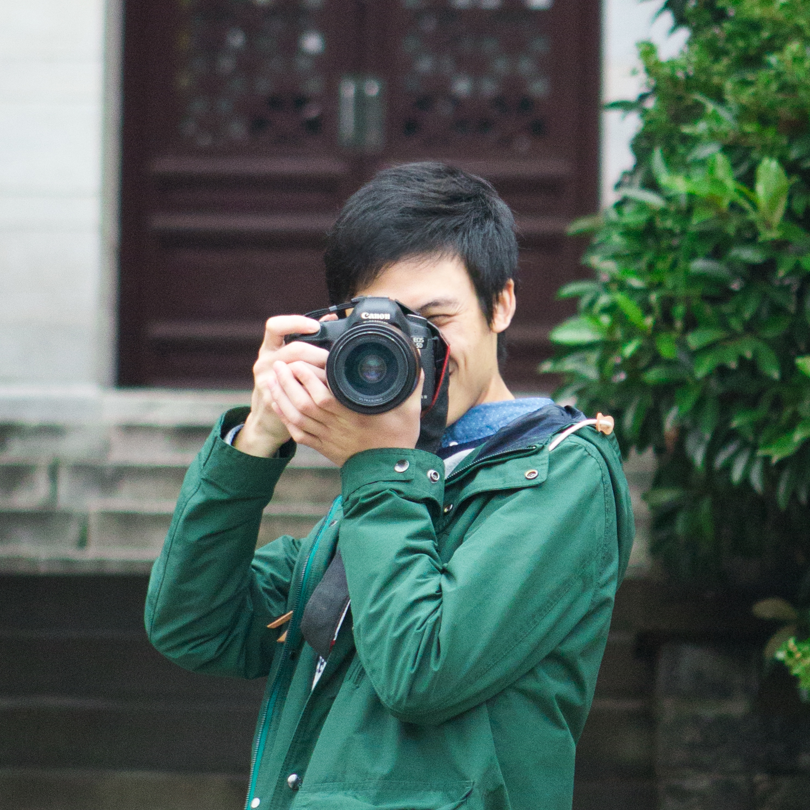

木纹子印象派是一个纪录生活的网站，热爱生活，源自于内心。网站本身是非商业性质的，摄影展示、生活感悟和爱心公益是三大核心内容，在这里您可以查看人像摄影，风光摄影，人文摄影以及我们的生活点滴。如果您对我们的作品比较感兴趣，可以点击右上角关注公众号与我们互动或联系摄影师。如果您对爱心公益公益感兴趣，十分欢迎您的关注，若要了解更多，请点击“爱心公益”版块。
摄影师由羊驼、张和小木瓜组成，分别专注于人像、风光和人文的拍摄，喜欢的话可以点击右上角“微博账号”关注哦，影像只是记录生活点滴的一种方式，愿，我们，都还有岁月可回首。青春短短十来寒暑，不悔梦归处，只恨太匆匆。
小木瓜DONG人文摄影师微信：hy-sxm微博：@小木瓜DONG坐标：南京/杭州/上海
微信公众号微信扫一扫，欢迎关注，不定期更新照片和文章